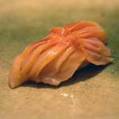
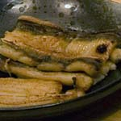

Fish & SeafoodAka-gai (ark shell)Often seen at sushi restaurants, aka-gai ("red clam") look like flower petals, starting out white at the base and turning bright red at the pointed tip. Although they are available year round, the best season is April & May. Anago (conger eel)Anago are saltwater eels, somewhat similar in taste and texture to unagi (freshwater eel). The best anago are caught near Haneda in Tokyo Bay. Anago is used for sushi, where it is usually boiled to get rid of excess oil, and then roasted and covered with a sweet sauce. Although precooked unagi is available at Japanese markets, anago is rarely available. Awabi (abalone)Abalone is enjoyed raw, or salted and steamed. It is rare to find awabi in the West, and is usually quite expensive. Female abalone from the Chiba region are said to be the best for steaming, while blue male abalone are best for sushi and sashimi. As expected, cooking changes the flavor and texture of the abalone, and it’s hard for me to decide which one I prefer. |
|


|